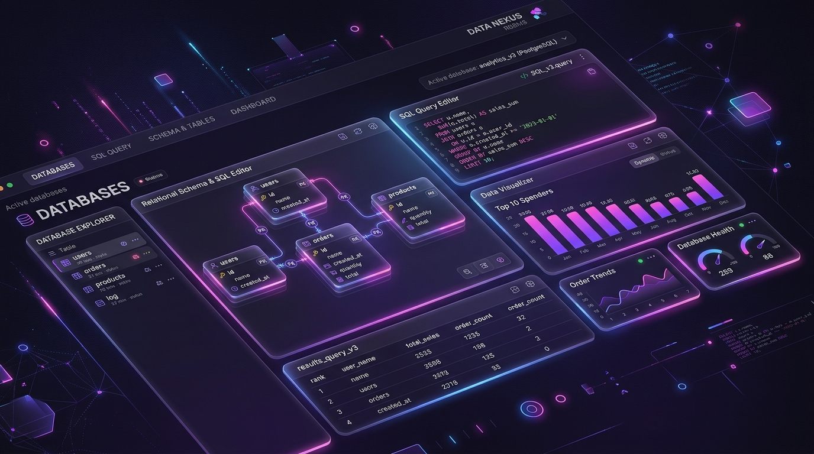
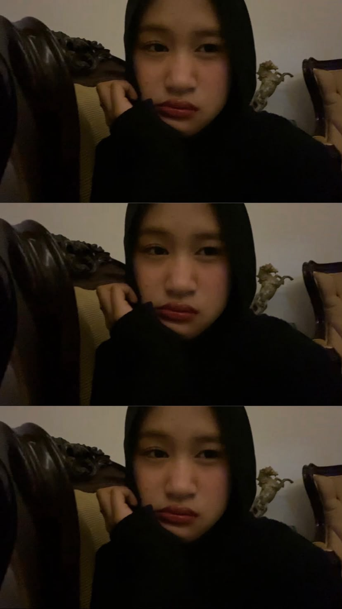
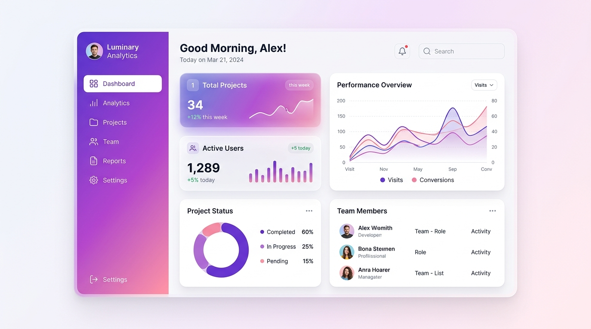
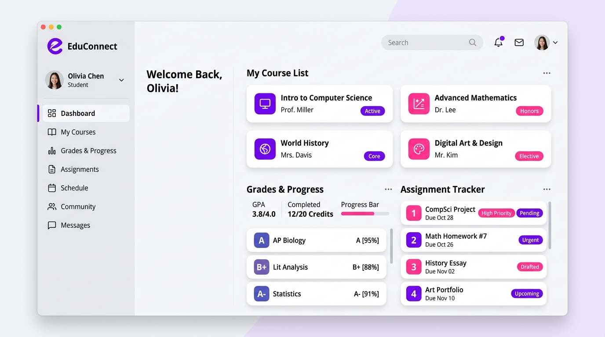
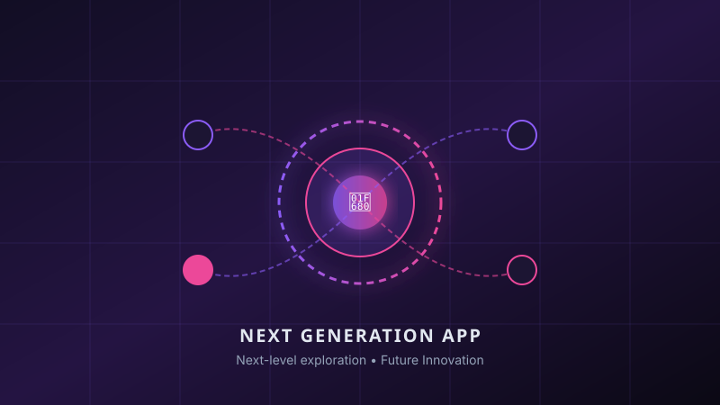

Database SystemDatabase Project
Tambahkan project database Maya di sini. Proyek ini mendokumentasikan skema relasional, rancangan tabel, dan implementasi query MySQL.
Hello, I'm
Rekayasa Perangkat Lunak • SMK Negeri Tembarak
Saya adalah siswi kelas XI Rekayasa Perangkat Lunak di SMK Negeri Tembarak yang sedang belajar dan mengembangkan kemampuan di bidang teknologi, pemrograman, dan database.

Halo, saya Maya Arfa Miskiya, biasa dipanggil Maya. Saya merupakan siswi kelas XI jurusan Rekayasa Perangkat Lunak di SMK Negeri Tembarak.
Saya memiliki ketertarikan terhadap dunia teknologi dan sedang mempelajari berbagai hal mengenai pemrograman serta database. Dunia RPL memberikan saya kesempatan untuk mengubah ide kreatif menjadi logika program yang bermanfaat dan aplikatif.
Selain belajar teknologi, saya juga memiliki pengalaman dalam organisasi dan kegiatan sekolah. Dari pengalaman tersebut saya belajar mengenai komunikasi, tanggung jawab, keberanian, dan kerja sama tim.
Belajar teknologi bukan hanya tentang menghafal baris kode, melainkan tentang ketekunan memahami logika dan membangun solusi yang bermanfaat.
Setiap jenjang memberikan pengalaman berharga yang membentuk karakter, kedisiplinan, dan ketertarikan saya terhadap dunia pendidikan serta teknologi.
Awal perjalanan pendidikan saya dimulai dari TK Budi Utami. Di sinilah rasa ingin tahu dan kegemaran belajar mulai tumbuh sejak dini.
Saya melanjutkan pendidikan dasar di MI Al-Mujahidin Tlogowunggu, Kaloran, Temanggung. Menanamkan nilai-nilai moral, kebersamaan, dan ketekunan akademik.
Saya melanjutkan pendidikan ke jenjang madrasah tsanawiyah di MTs Negeri 2 Temanggung. Pada jenjang ini, saya mulai aktif dalam kegiatan organisasi sekolah (OSIS) dan mengasah keterampilan kepemimpinan serta komunikasi antarsesama.
Saat ini saya menempuh pendidikan di SMK Negeri Tembarak dan mengambil jurusan Rekayasa Perangkat Lunak. Saya sedang mengembangkan kemampuan di bidang pemrograman dan database, mempersiapkan fondasi untuk menjadi developer masa depan.
Saya pernah mengikuti organisasi OSIS saat SMP. Di dalam organisasi ini, saya aktif berpartisipasi dalam perencanaan berbagai kegiatan sekolah, berdiskusi dengan rekan-rekan pengurus, dan berkontribusi untuk kemajuan lingkungan sekolah.
Saya pernah menjadi kandidat Ketua OSIS saat SMP. Proses pencalonan ini memberikan pembelajaran berharga tentang bagaimana menyampaikan visi, berani berbicara di hadapan publik, dan mendengarkan aspirasi warga sekolah.
Di SMK Negeri Tembarak, saya memilih jurusan Rekayasa Perangkat Lunak dan mulai mempelajari dunia teknologi serta pengembangan perangkat lunak. Saya belajar bagaimana merancang logika terstruktur, menyusun antarmuka web, dan menghubungkan aplikasi dengan data.
Teknologi dan bahasa pemrograman yang pernah dan sedang saya pelajari secara bertahap:
Salah satu bidang yang saya pelajari dalam jurusan RPL adalah database. Saya belajar mengenai pembuatan, pengelolaan, dan penggunaan database sebagai bagian dari pengembangan aplikasi.
Memahami bagaimana data mentah ditransformasikan menjadi informasi yang terstruktur, aman, dan saling terhubung dalam aplikasi perangkat lunak.
Wadah utama penyimpanan seluruh koleksi skema dan entitas sistem aplikasi.
Struktur kolom (attributes) dan baris (records) untuk memodelkan objek secara terorganisir.
Relasi antar-tabel (Primary Key & Foreign Key) untuk menjaga integritas data.
Informasi aktual yang dikelola, dimanipulasi dengan query (CRUD), dan ditampilkan kepada pengguna.
Prinsip Pembelajaran: Fokus pada pemahaman dasar perancangan database relasional yang rapi, normalisasi data, serta eksekusi query MySQL yang efektif untuk mendukung sistem informasi sekolah dan aplikasi web.
Saya pernah menjadi MC saat acara organisasi di sekolah. Pengalaman ini melatih keberanian saya berbicara di depan audiens, memandu jalannya acara dengan tertib, dan meningkatkan kepekaan komunikasi publik.
Saya pernah mengikuti ekstrakurikuler Taekwondo. Melalui latihan fisik dan mental di seni bela diri ini, saya mempelajari pentingnya kedisiplinan diri, ketahanan fokus, serta komitmen untuk terus berlatih.
Kombinasi antara pemahaman teknis di bidang software engineering dan keterampilan interpersonal yang terus diasah secara berkesinambungan.
Selain dunia teknologi, saya memiliki hobi menyanyi. Menyanyi menjadi salah satu kegiatan yang saya sukai dan menjadi cara untuk mengekspresikan diri, menyegarkan pikiran setelah belajar coding, serta melatih kepekaan seni dan rasa.
Daftar rancangan proyek perangkat lunak dan database yang merefleksikan proses belajar serta eksplorasi teknologi kejuruan.

Database SystemTambahkan project database Maya di sini. Proyek ini mendokumentasikan skema relasional, rancangan tabel, dan implementasi query MySQL.

Frontend WebTambahkan project website Maya di sini. Menampilkan antarmuka interaktif yang dibangun menggunakan HTML, CSS modern, dan JavaScript.

SMK RPLTambahkan project sekolah Maya di sini. Tugas praktik kejuruan Rekayasa Perangkat Lunak untuk menyelesaikan studi kasus di lingkungan sekolah.

Future ConceptProject berikutnya yang ingin saya buat. Eksplorasi aplikasi perangkat lunak yang lebih kompleks, mengintegrasikan sistem data modern dan arsitektur web terkini.
Setelah menyelesaikan pendidikan SMK, saya memiliki keinginan untuk melanjutkan pendidikan ke jenjang perguruan tinggi. Saya ingin terus belajar, mengembangkan kemampuan di bidang teknologi, memperbanyak pengalaman, dan mempersiapkan diri untuk masa depan.
Melanjutkan pendidikan ke perguruan tinggi.
Terus mengembangkan kemampuan pemrograman.
Memperdalam pemahaman database.
Membuat lebih banyak project.
Terus belajar dan berkembang.
Terima kasih sudah mengunjungi portfolio saya. Jika ingin terhubung, silakan mengunjungi social media saya.
Saya selalu terbuka untuk berdiskusi seputar dunia pendidikan RPL, pemrograman dasar, kolaborasi kegiatan sekolah, atau sekadar bertukar pengalaman belajar.
Silakan isi formulir di bawah ini untuk mengirimkan pesan atau saran.